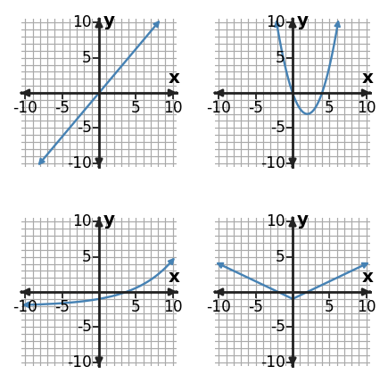
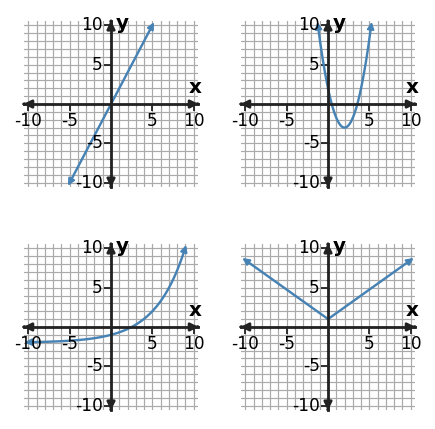

Algebra Extra Practice 4.1
1. Classify the function family represented by the table using the strongest numerical pattern in the values as evidence.
| x | y |
|---|---|
| 0 | 2 |
| 1 | 3 |
| 2 | 6 |
| 3 | 11 |
| 4 | 18 |
2. Two graphs in the gallery have a single minimum and vertical symmetry. Identify those two families and state the visible feature that distinguishes their minima.

3. A graph is symmetric with one turning point, and its table has constant second differences. Use both pieces of evidence to classify the function family.
4. Classify the function family represented by $y=x+2$. Give one feature of the equation that supports your classification.
5. Classify the function family represented by the table using the strongest numerical pattern in the values as evidence.
| x | y |
|---|---|
| -2 | 6 |
| -1 | 3 |
| 0 | 2 |
| 1 | 3 |
| 2 | 6 |
6. Classify the function family represented by the table using the strongest numerical pattern in the values as evidence.
| x | y |
|---|---|
| 0 | 1 |
| 1 | 3 |
| 2 | 9 |
| 3 | 27 |
7. If equally spaced x-values were recorded in tables, which graph would be expected to show constant second differences, and which would be expected to show a constant ratio? Identify both families.

8. Classify the function family represented by $y=x+1$. Give one feature of the equation that supports your classification.
9. Use the table features to sort this relationship into a function family. Name the family and the feature you used.
| x | y |
|---|---|
| 0 | 2 |
| 1 | 6 |
| 2 | 18 |
| 3 | 54 |
10. Compare the top-left and bottom-left graphs. Which is linear and which is exponential, and what feature distinguishes them?

11. An equation is $y=4|x+1|-2$, while a low-resolution plot looks like two straight pieces. What family is supported most strongly?
12. Classify the function family represented by $y=x$. Give one feature of the equation that supports your classification.
13. Which numerical pattern in the table is the strongest evidence for the function family? Use it to classify the relationship.
| x | y |
|---|---|
| -2 | 3 |
| -1 | 1 |
| 0 | -1 |
| 1 | 1 |
| 2 | 3 |
14. A student says the top-right and bottom-right graphs must be the same family because both are symmetric and have one minimum. What visible feature refutes the claim, and what are the two families?

15. A context says a quantity doubles each hour, and the table also has a constant ratio of 2, while the graph scale compresses the growth. Classify the family using the strongest evidence.
16. Classify the function family represented by $y=x-1$. Give one feature of the equation that supports your classification.
17. Which numerical pattern in the table is the strongest evidence for the function family? Use it to classify the relationship.
| x | y |
|---|---|
| 0 | 2 |
| 1 | 6 |
| 2 | 10 |
| 3 | 14 |
18. The top-right and bottom-right graphs both have a minimum. Which graph feature is the strongest evidence for deciding which is quadratic and which is absolute value?

19. Solve the system $ x+2y=-6$ and $2x-y=-2$. State the solution as an ordered pair.
20. Solve the system $ 3x+y=2$ and $2x-2y=-4$. State the solution as an ordered pair.
21. Solve the system $ 2x-y=-2$ and $3x+2y=11$. State the solution as an ordered pair.
22. Relationship A is $y=0.5x+6$. Relationship B is shown in the table. Which relationship changes faster, and which has the greater starting value?
| x | Relationship B |
|---|---|
| 0 | 2 |
| 2 | 5 |
| 4 | 8 |
23. Relationship A is $y=1.5x-1$. Relationship B is shown in the table. Which relationship changes faster, and which has the greater starting value?
| x | Relationship B |
|---|---|
| 0 | 5 |
| 2 | 7 |
| 4 | 9 |
24. Relationship A is $y=0.5x+6$. Relationship B is shown in the table. Which relationship changes faster, and which has the greater starting value?
| x | Relationship B |
|---|---|
| 0 | -1 |
| 2 | 3 |
| 4 | 7 |